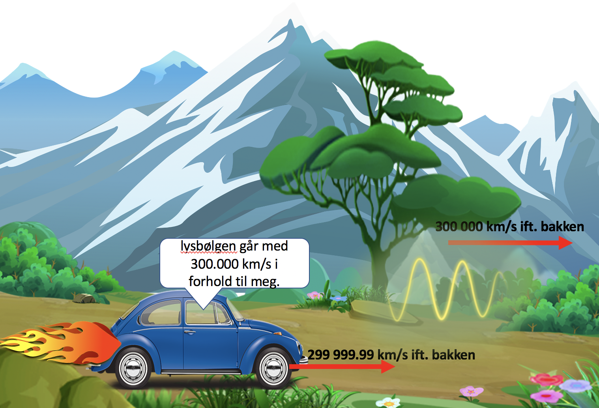

Forrige side🙂 🙁Klassisk relativitetPADLET

Men nå begynner det vel å bli absurd?? Bilen har praktisk talt lyshastighet (den kan aldri få lyshastighet siden den har masse: det trengs uendelig med energi for å få noe som har masse til å nå lyshastighet. Fotoner er masseløse og kan derfor gå med lysets hastighet, dette kommer vi nærmere tilbake til). Enda måler den lyset til å ha lyshastighet i forhold til seg selv?